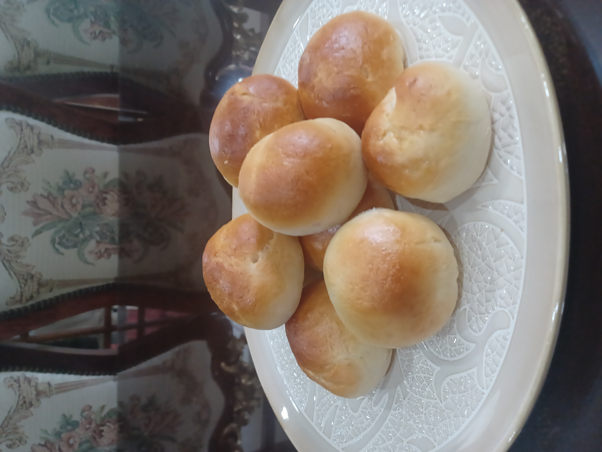

Ube Bread Roll
This Ube Bread Roll was a happy accident. That's why there's two additions of yeast, which makes it very soft and billowy.
To also increase the hydration levels, I used the tangzhong method of pre-gelatinizing a bread roux.

Ingredients
- 1:5 ratio of flour to milk ratio, to make tangzhong mixture for bread
- 2 1/4 tsp of yeast, plus 1 tsp of yeast for 2nd yeast mixture
- 2 tsp of sugar, divided into 1 tsp each
- 1/2 cup of warm milk, plus 1/4 cup of warm water for 2nd yeast mixture
- 2 cups of all purpose flour
- 2 cups of bread flour
- 1/2 cup of sugar
- 3/4 cup of milk
- 3 egg yolks
- 1 teaspoon of salt
- 1 teaspoon of baking powder
- 1/4-1/2 cup of flour (bread or all purpose) to add to dough to get it to thicken up.
Steps
- Prepare tangzhong mixture of 1:5 ratio of milk to flour for bread. 1 tablespoon of flour to 5 tablespoons of milk cooked over a low heat on stove is sufficient. Let cool.
- Proof the sugar, warm water and yeast in a small bowl for 15 minutes.
Spoon and level 2 cups of all purpose flour. Add to mixing bowl.
- Spooon and level 2 cups of bread flour. Add to mixing bowl.
- Add 1/2 cup of sugar to the mixing bowl.
- Turn on mixer and mix dry ingredients together.
- Add yeast mixture to mixing bowl.
- Add 3/4 cup of milk to the mixing bowl.
- Add egg yolks.
- Add 1/2 cup of melted butter.
- Add 1 teaspoon of salt.
- Add 1 teaspoon of baking powder
- Turn on mixer and knead for 5 minutes.
- Set aside after kneading for 1 hour. Let it rise.
- Prepare 2nd addition of yeast mixture to mixer. Add 1/4-1/2 cup of flour to mixer. Mix well. Consitency should that of slack dough; wet, sticky but still able to handle somewhat.
- Knead for another 5 minutes. Set aside for one hour.
- Dough should double in size or more in an hour. Divide into 50 gram portions on gently floured surface.
- Fill each dough portion with ube halaya.
- Set aside for another hour. 25 minutes into that wait, set over to 350 F. Let that preheat for 15 minutes.
- Cook as many ube dough portions on your baking tray for 18 minutes. Usually about 12. Feel free to add an egg wash to each dough portion for a nice golden finish.